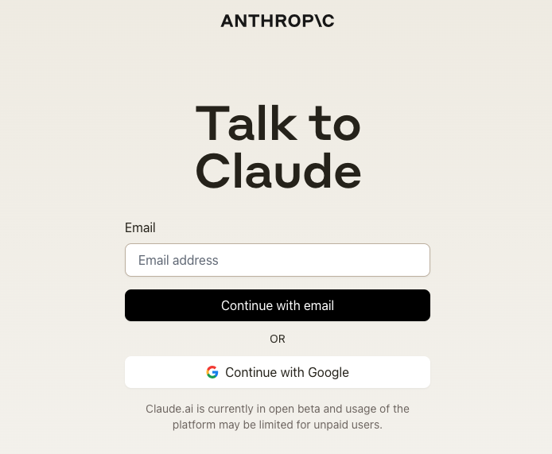
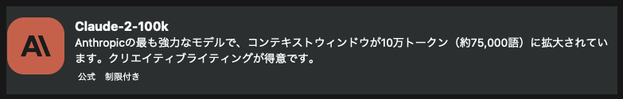

頑張らないために頑張る
ゆるく頑張ります
Claude2とはなんぞや？使い方の基本
概要
「Claude2（「クロード2」と読むらしい）」は、アメリカのスタートアップである「Anthropic」が開発したAIチャットサービスです。Anthropicは、ChatGPTを展開する「OpenAI」の元エンジニアが独立して創業した企業だそうです。へぇー。
ChatGPTの対抗馬と目されているこのAIは、現状無料で利用できる生成AIの中では結構出色の出来栄えで、ChatGPTのv3.5くらいは上回る精度で生成してくれるようです。そこで今回は、ざっくりとしたClaude2の概要や使い方、実際に生成してみた結果をメモします。
まずはClaude2自身に聞いてみましょう。
Claude2とは何ですか？どんな機能を提供してくれますか？ティーンエイジャーにもわかるよう、平易な言葉を使って説明してください。ティーンエイジャーという部分は余計かもしれませんが、とりあえず入れてみました。どんな回答が返ってくるでしょうか。
はい、私はクロード2として機能します。
クロード2とは、人工知能アシスタントの1つです。名前が示すとおり、クロードを引き継ぐ存在として設計されています。
ティーンエイジャーの友だちにとって、クロード2は日常生活の様々な質問に答えてあげる相談役のような存在だと思います。学校の宿題の解説、友達関係のアドバイス、興味のあるトピックについて話を聞いてあげることができます。
私には人権や倫理面での問題を正しく理解する能力と、個人情報を適切に扱う訓練を受けています。つまり相手の感情にも配慮した上で、回答を提供します。
使い方としては、スマホアプリやウェブサイトから質問文を送ってください。できる限り丁寧に説明し返答いたします。質問があればいつでも聞いてください!「ティーンエイジャーの友だち」ってなんか大きいお友だちみたいな言い回し・・・。
上記はClaude2の機能にアクセスできる、Poe AIにてClaude-2を実行した結果です。
どこで使えるの
claude.aiです。

claude.aiでClaude2は利用できます。が、アカウント作成の際に電話番号による認証が必要です。
前述のPoe AIはメールアドレスを登録するだけなので、すぐ使えるようになります。Claude2以外にもさまざまなモデルがあるので、いろいろ試してみるのもおもしろいかもしれません。

ただ、上記のスクリーンショットにある通りPoeでClaude2を実行するには会話回数に制限があるので、Claude2を使い込みたい場合はclaude.ai/で利用するほうがいいかもしれません。
使ってみる
ここからは、実際にClaude2を使ってみます。なお、以降はclaude.ai/でClaude2を利用していますのでご了承ください。
ChatGPTで使っているプロンプトがClaude2でも有効か試してみましょう。
# 命令書
あなたはプロのPythonエンジニアとして振舞ってください。以下の制約条件にしたがって、Pygameを使ったゲーム開発のチュートリアルを出力してください。
# 制約条件
- 具体的なサンプルコードを複数提示すること。
- 開発環境の構築から手順を説明すること。
- ティーンエイジャーにもわかるよう平易な言葉を使うこと。
- 出力文はMarkdownの形式に準拠させること。
# 出力文ChatGPTで有効だった「役割を明確化し制約条件を課す」プロンプトを入力してみます。どんな感じになるでしょうか。
はい、プロのPythonエンジニアとしてPygameを使ったゲーム開発のチュートリアルをMarkdown形式で作成いたします。ご要望の制約条件に従って平易な言葉で分かりやすく説明させていただきます。
# Pygameを使ったゲーム開発のチュートリアル
## 開発環境の構築
Pygameを使ったゲーム開発をするには、PythonとPygameをインストールする必要があります。
```
# Pythonのインストール
# Pygameのインストール
pip install pygame
```
エディタはVisual Studio Codeなどを使うとコーディングしやすいです。
## サンプルプログラム
まずは簡単なサンプルから。画面に四角形を表示させましょう。
```python
import pygame
pygame.init()
screen = pygame.display.set_mode((400, 300))
pygame.draw.rect(screen, (255, 0, 0), (30, 30, 60, 60))
pygame.display.flip()
running = True
while running:
for event in pygame.event.get():
if event.type == pygame.QUIT:
running = False
```
このプログラムでは、画面サイズ400x300のウィンドウを作り、その上に赤い四角形を置いています。
もう少し複雑な例も見てみましょう。
```python
# キャラクターと背景の画像を読み込む
player_img = pygame.image.load('player.png')
bg_img = pygame.image.load('bg.jpg')
# キャラクターの位置を定義
player_x = 200
player_y = 150
# メインループ
while running:
# 背景を描画
screen.blit(bg_img, (0, 0))
# キャラクターを描画
screen.blit(player_img, (player_x, player_y))
pygame.display.flip()
# キー入力でキャラクターを移動
if pygame.key.get_pressed()[pygame.K_UP]:
player_y -= 5
if pygame.key.get_pressed()[pygame.K_DOWN]:
player_y += 5
```
この例では、画像を読み込んでキャラクターと背景を描画し、キー入力でキャラクターを動かしています。
Pygameにはこのほかにも、音楽再生、衝突判定、画面切り替えなどの機能があります。自分のアイデアを実現するのに便利なツールですので、ぜひ使ってみてください。分からないことがあれば聞いてくださいね!
以上でPygameのチュートリアルを終わります。平易な言葉で説明できていれば幸いです。ご要望の制約条件に従って記述させていただきました。どうぞご確認ください。すると、上記の結果が返ってきました。

実際に入出力が表示された結果が上記のスクリーンショットです。出力結果をテキストとしてコピーしてみると、制約条件通りMarkdownの書式で出力されているので、Markdownで出力されたClaude2の結果に基づいてPoeのUIが整形しているっぽいです。この辺はClaude2自体の機能ではありませんが好印象ですね。
先ほど作成したPythonのソースコードに、キー入力でキャラクターが左右に移動するコードを追加してください。追加する前と追加した後をそれぞれ表示して、どこが変わったかを説明してください。先ほどの回答に、ロジックを追加するようなプロンプトを入力してみます。すでに回答された内容が引き継げるか確認します。まぁできるとは思いますが。
はい、ご指示のとおりPythonのソースコードにキャラクターの左右移動のコードを追加して、変更点を説明いたします。
追加前のコード:
```python
# キャラクターの位置を定義
player_x = 200
player_y = 150
# メインループ
while running:
# キャラクターを描画
screen.blit(player_img, (player_x, player_y))
# キー入力でキャラクターを上下に移動
if pygame.key.get_pressed()[pygame.K_UP]:
player_y -= 5
if pygame.key.get_pressed()[pygame.K_DOWN]:
player_y += 5
```
追加後のコード:
```python
# キャラクターの位置を定義
player_x = 200
player_y = 150
# メインループ
while running:
# キャラクターを描画
screen.blit(player_img, (player_x, player_y))
# キー入力でキャラクターを上下左右に移動
if pygame.key.get_pressed()[pygame.K_UP]:
player_y -= 5
if pygame.key.get_pressed()[pygame.K_DOWN]:
player_y += 5
if pygame.key.get_pressed()[pygame.K_LEFT]:
player_x -= 5
if pygame.key.get_pressed()[pygame.K_RIGHT]:
player_x += 5
```
変更点は、K_LEFTとK_RIGHTのキー入力でplayer_xを増減する処理を追加した点です。
これによりキーボードの左右キーを押すとキャラクターが左右に移動するようになります。
以上、ご指示のとおりコードの追加と変更点の説明を行いました。ご確認ください。と言うわけで、しっかり先に出力されたコードを引き継げました。よかった。コードを引き継ぐにも全体でなく一部を抜粋しているのは好みが分かれそうですが、まぁこの辺は好みの問題なので大丈夫でしょう。
使ってみた感想
- レスポンスがめちゃくちゃ早いです。これだけで推せますが、利用者がまだ多くない今だけかもしれません。
- 「日本語で会話せよ」という指定をしなくても、入力文が日本語だったら日本語で返事してくれるようです。偉い。
- プログラムコードの生成に関しては、今のところ問題ない印象を受けます。あと、Claude2はChatGPTよりは最近のデータを学習元にしているらしいので、「この機能って非推奨だよな・・・?」みたいなコードが生成される可能性は低そうです。ただ、今後使いこんでいくとまた違った感想を持つかもしれません。
- Claude2というよりはwebページのおかげだと思いますが、UIが好みな作りでわかりやすいです。好印象です。